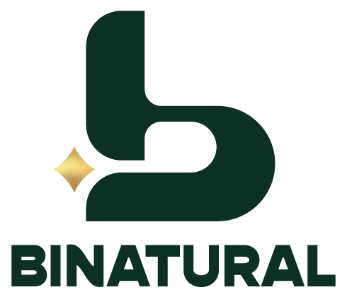

Fornecimento, instalação e configuração de infraestrutura de virtualização com dois servidores Dell PowerEdge R360, storage QNAP compartilhado, switch core UniFi 10 GbE e rack.

Apresentamos esta proposta para a implantação de uma infraestrutura de virtualização em cluster, conforme o projeto técnico apresentado, que elimina a dependência de um único equipamento para cada sistema e centraliza os dados em um storage protegido.
Se um servidor falhar, as máquinas virtuais reiniciam automaticamente no outro nó, sem intervenção manual.
Servidores, ERP, arquivos e aplicações rodando como VMs e containers em uma única plataforma gerenciada.
Storage em RAID com camada NVMe para desempenho e camada de alta capacidade para backups e arquivos.
Novos nós, discos e VLANs podem ser adicionados sem redesenhar a solução e sem licenciamento por núcleo.
Fornecimento, instalação e configuração dos equipamentos abaixo, montados em rack e entregues como um cluster Proxmox VE em operação.
Xeon 6 6369P, 64 GB DDR5 e fonte redundante em cada nó
4 HDs Seagate IronWolf de 8 TB e 2 SSDs NVMe de 2 TB
Portas 10 GbE e 2.5 GbE, com segmentação em VLANs
Rack tipo servidor de 1000 mm, cabeamento e organização dos equipamentos
Corosync em dois anéis: VLAN de cluster no switch e cabo direto entre os nós. O QDevice no QNAP dá o terceiro voto.
VLAN dedicada para iSCSI e NFS, isolada do tráfego de usuários. O QNAP se conecta ao switch em 10 GbE SFP+.
Interface web do Proxmox, iDRAC e a rede das VMs acessada pelos usuários da Binatural.
Servidores rack 1U idênticos formam o cluster. Qualquer um deles é capaz de assumir as cargas críticas do outro.
Storage rack 1U com 4 baias e 2 portas 10 GbE SFP+. Os discos das VMs ficam fora dos servidores, e assim qualquer nó enxerga os mesmos dados.
2 SSDs NVMe M.2 de 2 TB nos slots internos do QNAP
4 × Seagate IronWolf 8 TB, projetados para NAS em operação contínua
Switch camada 3 com o tráfego separado em VLANs, para que backup e storage não disputem banda com os usuários.
| VLAN | Tráfego | Membros |
|---|---|---|
| 10 · Gerência | Interface web do Proxmox, iDRAC e painel do QNAP | PVE1, PVE2, QNAP, estação da TI |
| 20 · Cluster | Corosync anel 0 e voto do QDevice | PVE1, PVE2, QNAP |
| 30 · Storage | iSCSI e NFS com jumbo frames (MTU 9000) | PVE1, PVE2, QNAP |
| 40 · Migração | Migração ao vivo de VMs entre os nós | PVE1, PVE2 |
| 100 · Produção | Rede das VMs acessada pelos usuários | VMs, estações, uplink de internet |
Um cluster de dois nós sozinho não sabe quem está certo quando perde contato. O QDevice no QNAP dá o voto de desempate: quem mantém a maioria segue operando.
Nó de processamento
Nó de processamento
Serviço QNetd em container no QNAP
| Evento | Votos | Comportamento do cluster |
|---|---|---|
| Falha do PVE1 ou PVE2 | 2 de 3 | Automático Quorum mantido. O nó isolado é desligado com segurança e as VMs protegidas reiniciam no nó restante. |
| Manutenção planejada | 3 de 3 | Sem parada As VMs são migradas ao vivo para o outro nó antes da atualização ou reinício. |
| QDevice indisponível | 2 de 3 | Alerta Os dois nós seguem operando normalmente. O terceiro voto volta junto com o serviço. |
As cargas são distribuídas entre os dois nós em operação normal e os discos ficam na camada de storage adequada ao perfil de uso.
| Carga | Nó preferencial | Storage | Proteção |
|---|---|---|---|
| ERP e banco de dados | PVE1 | NVMe RAID 1 · iSCSI | HA ativo · backup diário |
| Controlador de domínio e DNS | PVE2 | NVMe RAID 1 · iSCSI | HA ativo · backup diário |
| Servidor de arquivos | PVE2 | HDD RAID 10 · NFS | HA ativo · backup diário |
| Aplicações internas e web | PVE1 | NVMe RAID 1 · iSCSI | HA ativo · backup diário |
| Monitoramento e utilitários | Qualquer | HDD RAID 10 · NFS | Backup semanal |
| Backups, ISOs e modelos | Não se aplica | HDD RAID 10 · NFS | Retenção diária, semanal e mensal |
Distribuição ilustrativa, a ser validada no levantamento dos sistemas da Binatural.
64 GB em cada nó para VMs e containers.
Camada rápida para as VMs de produção.
Backups, arquivos e cargas de menor exigência.
Entre o storage e o switch core.
Para que um único nó consiga assumir todas as VMs protegidas por HA, a memória dessas VMs somada nos dois nós deve caber em um servidor. A barra mostra o nó sobrevivente após uma falha.
Em operação normal cada nó roda cerca de 24 GB de VMs críticas e usa a memória livre para cargas não críticas, que são as primeiras a serem desligadas em caso de falha.
Alta disponibilidade protege contra falha de hardware. Backup protege contra erro humano, vírus e corrupção de dados. A solução entrega os dois.
RAID 1 no NVMe e RAID 10 nos HDDs. A queda de um disco não interrompe o serviço e a troca é feita com o equipamento ligado.
Snapshots antes de atualizações e backup agendado de todas as VMs para o volume NFS, com retenção diária, semanal e mensal.
Recomendamos uma cópia dos backups fora da sede, em nuvem ou disco externo rotativo, seguindo a regra 3, 2, 1.
3 cópias dos dados, em 2 tipos de mídia diferentes, com 1 delas fora da empresa. É o padrão mínimo contra ransomware e perda total do site.
Serviços executados por equipe técnica especializada, com a migração dos sistemas atuais fora do horário de expediente para não afetar a rotina da unidade.
Inventário dos sistemas, volumes de dados e janelas de manutenção.
Instalação do rack, servidores, storage, switch core e cabeamento identificado.
Criação do RAID 1 e RAID 10, volumes iSCSI e NFS e container do QDevice.
VLANs, jumbo frames, anel direto do Corosync e regras de acesso.
Instalação dos nós, criação do cluster, QDevice, storages e grupos de HA.
Conversão dos servidores atuais em VMs e validação com os usuários.
Desligamento simulado de cada nó, disco e link para comprovar o failover.
Rotina de backup, documentação, treinamento da equipe e operação assistida.
Itens que não impedem a implantação, mas eliminam os pontos únicos de falha que ainda restam na solução.
| Ponto | Impacto | Recomendação |
|---|---|---|
| Storage único | Alto | O QNAP concentra os discos das VMs. Manter contrato de garantia, discos reserva e restauração testada dos backups. |
| Switch core único | Médio | O anel direto mantém o cluster sincronizado, mas storage e usuários dependem do switch. Prever um segundo switch em expansão futura. |
| Disco local único | Médio | Adicionar um segundo disco em cada R360 para espelhar o sistema do Proxmox. |
| Energia elétrica | Médio | Nobreak dimensionado para todo o rack, com desligamento automático e ordenado dos equipamentos. |
Itens que ficam fora desta proposta e condições de prazo e suporte da implantação.
Definido após a aprovação da proposta, o prazo de entrega dos equipamentos pelos fabricantes e a disponibilidade da unidade para as janelas de migração.
| Qtd | Item | Especificação | Unitário | Total |
|---|
Executados por equipe técnica especializada, do levantamento à operação assistida.
| Serviço | Descrição | Valor |
|---|
Fornecimento dos materiais da planilha e serviço de instalação, configuração e migração para a Binatural .
O serviço de instalação e configuração conta com suporte presencial e remoto durante 90 dias após a entrega final. A A+.com permanece à disposição para esclarecimentos técnicos e eventuais adequações necessárias.
Condições de pagamento:
Infraestrutura em cluster de alta disponibilidade para a Binatural, .
Projeto e implantação A+.com Engenharia e Tecnologia.